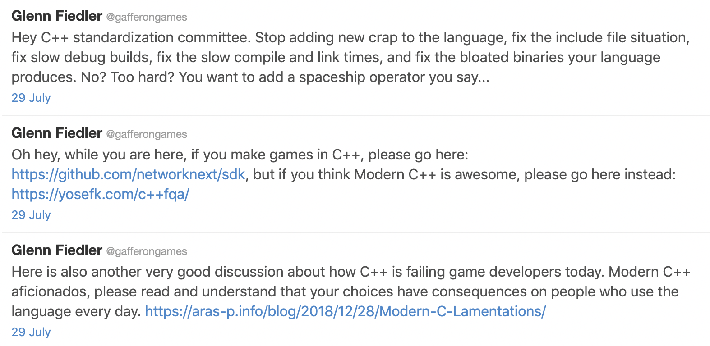

2019-08-01
Quote:
Contracts were pulled from C++20 because the consensus for their current design has disappeared1
Quote:
The big news though was the withdrawal of Contracts from the working draft. The consensus is that it simply isn’t ready yet <...>
https://herbsutter.com/2019/07/25/survey-results-your-top-five-iso-c-feature-proposals/
Comment:
Indeed, the results are incredibly biased, in favor of:
- Your own proposals.
- Your own interests.
- Proposals made recently or which have gone through part of the adoption pipeline.
https://www.reddit.com/r/cpp/comments/ci0uz6/survey_results_your_top_five_iso_c_feature/

https://www.reddit.com/r/cpp/comments/chwncp/meeting_bjarne_stroustrup_creator_of_c_this/
https://www.reddit.com/r/cpp/comments/c68457/simplify_your_code_with_rocket_science_c20s/
https://www.reddit.com/r/cpp/comments/c6gtd4/how_do_you_get_the_benefits_of_rust_in_c/